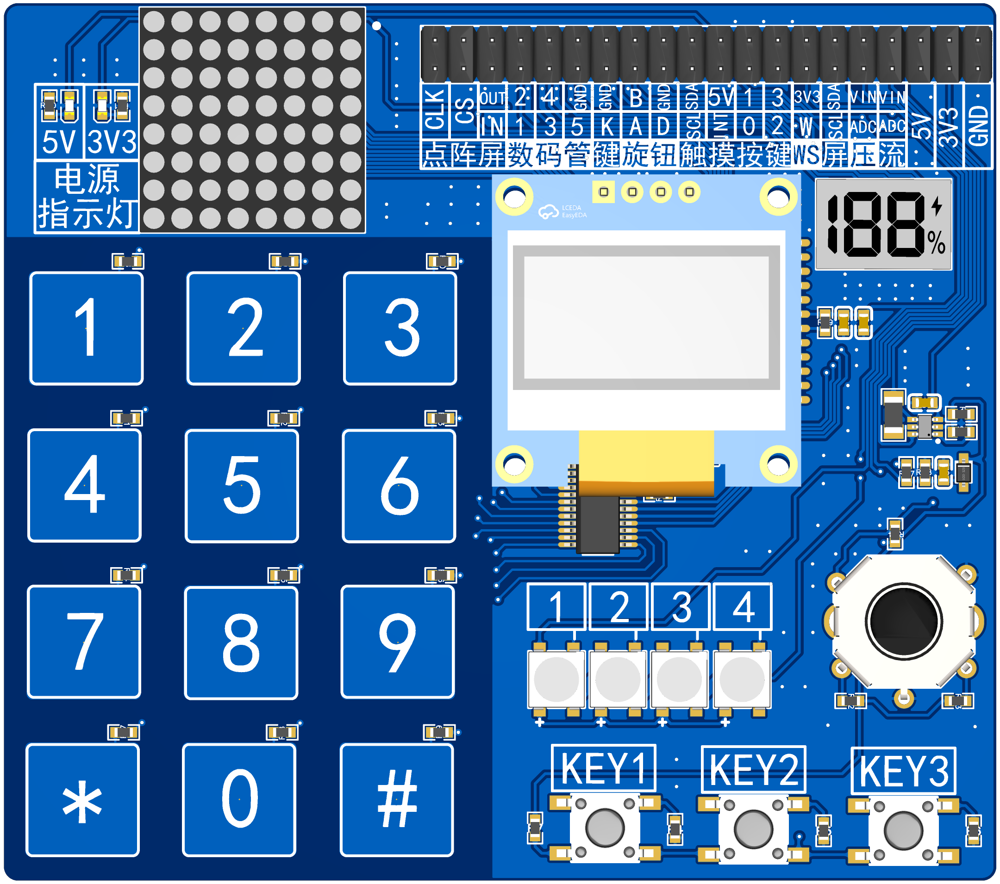
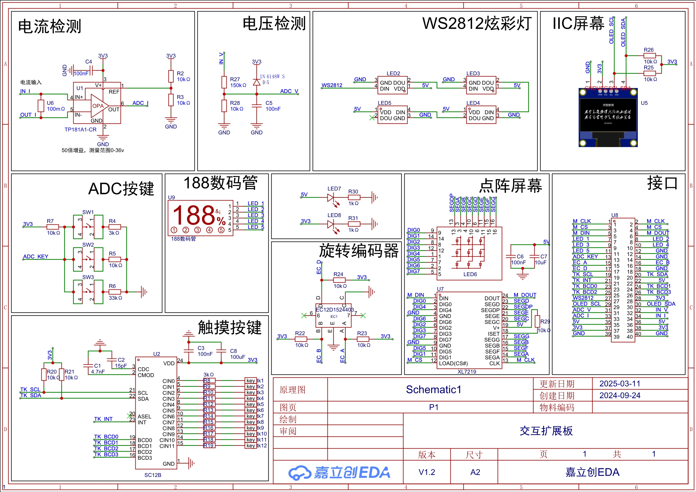

<!DOCTYPE lake>
<h2 data-lake-id="rLWrw" id="rLWrw"></h2><p data-lake-id="u83a13d2f" id="u83a13d2f"><br/></p><h2 data-lake-id="kOwGY" id="kOwGY"><span data-lake-id="u2cb99958" id="u2cb99958">功能说明</span></h2><ol list="ud3c40d1c"><li data-lake-id="u08bdffe0" fid="uf1c42562" id="u08bdffe0"><span data-lake-id="u44db6799" id="u44db6799">188数码管</span></li><li data-lake-id="u91b73d37" fid="uf1c42562" id="u91b73d37"><span data-lake-id="u9b919168" id="u9b919168">ws2812灯</span></li><li data-lake-id="uc14ce420" fid="uf1c42562" id="uc14ce420"><span data-lake-id="u788906c1" id="u788906c1">ADC按键</span></li><li data-lake-id="u781fa099" fid="uf1c42562" id="u781fa099"><span data-lake-id="u6aefc695" id="u6aefc695">触摸控制板</span></li><li data-lake-id="u55d1ac4f" fid="uf1c42562" id="u55d1ac4f"><span data-lake-id="u82bb7896" id="u82bb7896">旋钮</span></li><li data-lake-id="ufbb19637" fid="uf1c42562" id="ufbb19637"><span data-lake-id="ua566213f" id="ua566213f">点阵屏幕</span></li><li data-lake-id="u755a7872" fid="uf1c42562" id="u755a7872"><span data-lake-id="ud202cf35" id="ud202cf35">电压测量</span></li><li data-lake-id="u9eaccbb0" fid="uf1c42562" id="u9eaccbb0"><span data-lake-id="u0e3d5465" id="u0e3d5465">电流测量</span></li></ol><h2 data-lake-id="vJdcf" id="vJdcf"><span data-lake-id="u92f487fb" id="u92f487fb">原理图</span></h2><p data-lake-id="ua680152a" id="ua680152a"></p><p data-lake-id="u4c9e179c" id="u4c9e179c"><br/></p>